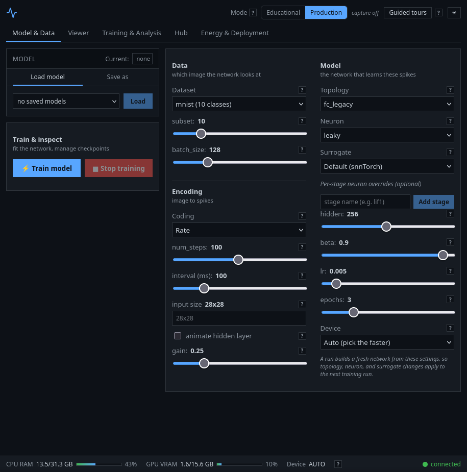

<title>Spikeforge</title>
<link rel="preconnect" href="https://fonts.googleapis.com">
<link rel="preconnect" href="https://fonts.gstatic.com" crossorigin>
<link href="https://fonts.googleapis.com/css2?family=Inter:wght@400;500;600;700;800&display=swap" rel="stylesheet">
<style>
  /* Same tokens as the dashboard app (client/src/styles/base.css) --
     the landing page is themed identically, not independently. */
  :root{
    --bg:#0d1117;
    --panel:#161b22;
    --panel-alt:#12171e;
    --panel-head:#0b0f14;
    --border:#30363d;
    --text:#c9d1d9;
    --muted:#8b949e;
    --accent:#58a6ff;
    --on-accent:#0d1117;
    --ok:#3fb950;
    --bad:#f85149;
    --warn:#e3b341;
    color-scheme: dark;
  }
  [data-theme="light"]{
    --bg:#f6f8fa;
    --panel:#ffffff;
    --panel-alt:#ffffff;
    --panel-head:#f6f8fa;
    --border:#d0d7de;
    --text:#1f2328;
    --muted:#59636e;
    --accent:#0969da;
    --on-accent:#ffffff;
    --ok:#1a7f37;
    --bad:#cf222e;
    --warn:#9a6700;
    color-scheme: light;
  }

  *{box-sizing:border-box;}
  html,body{height:100%;}
  body{
    margin:0;
    background:var(--bg);
    color:var(--text);
    font-family:"Inter", ui-sans-serif, system-ui, sans-serif;
    line-height:1.55;
    font-size:15.5px;
  }
  .wrap{max-width:980px;margin-inline:auto;padding-inline:20px;}
  a{color:var(--accent);}
  a:focus-visible, button:focus-visible{outline:2px solid var(--accent);outline-offset:2px;}
  code, .mono{font-family:ui-monospace,"SFMono-Regular",Menlo,Consolas,monospace; font-size:0.92em;}
  p{max-width:68ch;}
  p code{background:var(--panel-alt);padding:0.05em 0.35em;border-radius:4px;}

  .display{font-weight:800;text-wrap:balance;line-height:1.15;letter-spacing:-0.01em;}

  .icon{display:inline-block;vertical-align:-3px;color:var(--accent);}
  .icon svg{display:block;}

  header.site{
    position:sticky;top:0;z-index:10;
    background:var(--panel-head);border-bottom:1px solid var(--border);
  }
  .topbar{
    display:flex;align-items:center;justify-content:space-between;
    padding-block:14px;flex-wrap:wrap;gap:10px;
  }
  .brand{display:inline-flex;align-items:center;gap:8px;font-weight:800;font-size:17px;color:var(--text);text-decoration:none;}
  .topnav{display:flex;gap:20px;font-size:14px;flex-wrap:wrap;}
  .topnav a{color:var(--text);text-decoration:none;border-bottom:1px solid transparent;}
  .topnav a:hover{border-color:var(--accent);}

  .hero{display:grid;grid-template-columns:1.1fr 0.9fr;gap:36px;padding-block:40px 34px;align-items:start;}
  @media (max-width:820px){ .hero{grid-template-columns:1fr;} }
  .hero h1{display:flex;align-items:center;gap:14px;font-size:clamp(28px,5vw,40px);margin:0 0 14px;}
  .hero h1 .icon{width:1.1em;height:1.1em;}
  .hero h1 .icon svg{width:100%;height:100%;}
  .pre1{
    margin-top:18px;padding:12px 14px;border-left:3px solid var(--accent);
    background:var(--panel);border-radius:0 6px 6px 0;font-size:13.5px;color:var(--muted);
  }
  .pre1 b{color:var(--text);}

  .install{margin-top:20px;background:var(--panel);border:1px solid var(--border);border-radius:6px;padding:13px 15px;max-width:60ch;}
  .install .cmd{font-size:13px;overflow-x:auto;}
  .install .cmd .p{color:var(--accent);}

  .links{display:flex;gap:18px;margin-top:18px;font-size:14px;flex-wrap:wrap;}
  .links a{text-decoration:none;font-weight:500;}

  .scope{background:var(--panel);border:1px solid var(--border);border-radius:6px;padding:14px 14px 4px;}
  .scope-head{font-family:ui-monospace,monospace;font-size:11px;color:var(--muted);margin-bottom:8px;line-height:1.5;}
  canvas{display:block;width:100%;height:auto;border-radius:4px;background:var(--panel-alt);}
  .scope-legend{display:flex;gap:16px;margin:9px 0 12px;font-family:ui-monospace,monospace;font-size:11px;color:var(--muted);flex-wrap:wrap;}
  .scope-legend span{display:inline-flex;align-items:center;gap:5px;}
  .swatch{width:9px;height:9px;border-radius:2px;display:inline-block;}
  .scope-cite{font-size:11px;color:var(--muted);margin-top:8px;}
  .scope-cite code{background:none;padding:0;}

  main{display:block;}
  section{padding-block:34px;border-top:1px solid var(--border);}
  section h2{font-weight:800;font-size:22px;margin:0 0 6px;}
  section > p.intro{color:var(--muted);font-size:14px;margin:0 0 22px;}

  dl.features{display:grid;grid-template-columns:140px 1fr;row-gap:14px;column-gap:18px;margin:0;}
  dl.features dt{font-weight:600;font-size:14px;padding-top:2px;}
  dl.features dd{margin:0;color:var(--muted);font-size:14px;max-width:62ch;}
  @media (max-width:640px){ dl.features{grid-template-columns:1fr;row-gap:4px;} dl.features dd{margin-bottom:10px;} }

  .shot{margin:24px 0 0;max-width:520px;background:var(--panel);border:1px solid var(--border);border-radius:6px;padding:8px;}
  .shot img{display:block;width:100%;height:auto;border-radius:4px;border:1px solid var(--border);}
  .shot figcaption{font-size:12px;color:var(--muted);padding:9px 4px 2px;}

  table{width:100%;border-collapse:collapse;font-size:14px;}
  th{text-align:left;font-family:ui-monospace,monospace;font-size:11px;letter-spacing:0.04em;text-transform:uppercase;color:var(--muted);padding:0 10px 8px 0;border-bottom:1px solid var(--border);}
  td{padding:10px 10px 10px 0;border-bottom:1px solid var(--border);vertical-align:top;}
  td.note{color:var(--muted);font-size:13px;}
  tr:last-child td{border-bottom:none;}
  .status-wrap{overflow-x:auto;}

  .pill{font-family:ui-monospace,monospace;font-size:11px;padding:2px 8px;border-radius:10px;white-space:nowrap;display:inline-block;}
  .pill.done{color:var(--ok);background:color-mix(in srgb, var(--ok) 16%, transparent);}
  .pill.dev{color:var(--warn);background:color-mix(in srgb, var(--warn) 18%, transparent);}
  .pill.none{color:var(--muted);background:color-mix(in srgb, var(--muted) 18%, transparent);}

  footer.site{
    position:sticky;bottom:0;z-index:10;
    background:var(--panel-head);border-top:1px solid var(--border);
    padding-block:14px;
  }
  .foot-row{display:flex;justify-content:space-between;flex-wrap:wrap;gap:14px;font-size:13px;color:var(--muted);}
  .foot-links{display:flex;gap:16px;flex-wrap:wrap;}
  .foot-links a{color:var(--muted);text-decoration:none;}
  .foot-links a:hover{color:var(--accent);}

  @media (prefers-reduced-motion: reduce){ * { animation-duration: 0.001ms !important; } }
</style>

<header class="site">
  <div class="wrap topbar">
    <a class="brand" href="#top">
      <span class="icon" aria-hidden="true">
        <svg width="20" height="20" viewBox="0 0 24 24" fill="none" stroke="currentColor" stroke-width="2" stroke-linecap="round" stroke-linejoin="round"><path d="M22 12h-2.48a2 2 0 0 0-1.93 1.46l-2.35 8.36a.25.25 0 0 1-.48 0L9.24 2.18a.25.25 0 0 0-.48 0l-2.35 8.36A2 2 0 0 1 4.49 12H2"/></svg>
      </span>
      spikeforge
    </a>
    <nav class="topnav">
      <a href="#features">Features</a>
      <a href="#status">Status</a>
      <a href="#documentation">Documentation</a>
      <a href="https://github.com/capsize-games/spikeforge">GitHub</a>
    </nav>
  </div>
</header>

<main>
<div class="wrap" id="top">

  <div class="hero">
    <div>
      <h1 class="display">
        <span class="icon" aria-hidden="true">
          <svg width="34" height="34" viewBox="0 0 24 24" fill="none" stroke="currentColor" stroke-width="2" stroke-linecap="round" stroke-linejoin="round"><path d="M22 12h-2.48a2 2 0 0 0-1.93 1.46l-2.35 8.36a.25.25 0 0 1-.48 0L9.24 2.18a.25.25 0 0 0-.48 0l-2.35 8.36A2 2 0 0 1 4.49 12H2"/></svg>
        </span>
        spikeforge
      </h1>
      <p>
        A spiking-neural-network (SNN) toolkit built on
        <a href="https://snntorch.readthedocs.io/">snnTorch</a> and PyTorch.
        Loads MNIST-style and neuromorphic event datasets, encodes them into
        rate, latency, delta, and random spikes, and trains, validates,
        exports, and deploys LIF networks — with a live browser dashboard
        served over WebSockets.
      </p>

      <div class="pre1">
        <b>Pre-1.0.</b> Before trusting any number this produces, read
        <a href="https://github.com/capsize-games/spikeforge/blob/main/documentation/implications-and-boundaries.md">Implications and boundaries</a>.
      </div>

      <div class="install">
        <div class="cmd mono">
          <span class="p">$</span> git clone https://github.com/capsize-games/spikeforge.git<br>
          <span class="p">$</span> cd spikeforge &amp;&amp; ./install.sh
        </div>
      </div>

      <div class="links">
        <a href="https://github.com/capsize-games/spikeforge">Source on GitHub &rarr;</a>
        <a href="#documentation">Documentation index &rarr;</a>
      </div>
    </div>

    <div class="scope">
      <div class="scope-head">Leaky integrate-and-fire neuron<br>&beta;=0.90, threshold=1.00, reset=subtract</div>
      <canvas id="lifCanvas" width="600" height="280" role="img" aria-label="Animated leaky integrate-and-fire neuron: an input spike train drives a membrane-potential trace that leaks, charges, and emits an output spike on threshold crossing, then resets by subtraction."></canvas>
      <div class="scope-legend">
        <span><span class="swatch" style="background:var(--muted)"></span>I[t]</span>
        <span><span class="swatch" style="background:var(--accent)"></span>U[t]</span>
        <span><span class="swatch" style="background:var(--text)"></span>S[t]</span>
      </div>
      <p class="scope-cite">Defaults from <code>spikeforge/neurons/contract.py</code> (<code>DEFAULT_BETA</code>, <code>DEFAULT_THRESHOLD</code>). Notation matches the dashboard's own <code>U[t]</code>/<code>I[t]</code>/<code>S[t]</code> introspection traces.</p>
    </div>
  </div>

  <section id="features">
    <h2>Features</h2>
    <dl class="features">
      <dt>Encoding</dt>
      <dd>Rate, latency, delta, and random spike coders.</dd>
      <dt>Training</dt>
      <dd>Fully-connected and convolutional LIF networks with surrogate-gradient cross-entropy, live loss/accuracy, checkpointing, and opt-in AMP / gradient checkpointing / truncated BPTT / multi-GPU.</dd>
      <dt>Topologies</dt>
      <dd><code>fc_legacy</code>, <code>fc_small</code>, <code>conv_net</code>, <code>recurrent_net</code>, plus the sequence presets <code>sequence_mlp</code> and <code>sequence_attn</code>.</dd>
      <dt>Datasets</dt>
      <dd>MNIST, Fashion-MNIST, KMNIST, QMNIST, USPS, EMNIST, CIFAR-10, and — via the <code>events</code> extra — N-MNIST, DVS128 Gesture, CIFAR10-DVS, and Spiking Speech Commands.</dd>
      <dt>Interpreter spine</dt>
      <dd>NIR export, an independent NIR interpreter, and numerical drift validation against it.</dd>
      <dt>Introspection</dt>
      <dd>Educational-mode <code>U[t]</code>/<code>I[t]</code>/<code>S[t]</code> traces, trajectory metrics, encoding/decoding reports, and surrogate-derivative curves.</dd>
      <dt>Deployment</dt>
      <dd>A capability matrix, substitution/rewrite reports, weight quantization, energy accounting, and executable <code>reference</code>, <code>norse</code>, and <code>lava_loihi2</code> backends.</dd>
      <dt>Model hub</dt>
      <dd>A curated, offline-first catalog plus optional live Hugging Face search.</dd>
      <dt>Dashboard</dt>
      <dd>A React + TypeScript UI with training, introspection, analysis, targets, energy, and hub panels, and seven guided walkthroughs.</dd>
    </dl>

    <figure class="shot">
      
      <figcaption>The bundled dashboard, running locally via <code>docker compose up --build</code>.</figcaption>
    </figure>
  </section>

  <section id="status">
    <h2>Status</h2>
    <p class="intro">
      Pulled from the target and toolkit status tables in <code>plans/</code>
      rather than restated separately, so this can't drift from the source
      of truth.
    </p>
    <div class="status-wrap">
    <table>
      <thead><tr><th>Component</th><th>Status</th><th>Note</th></tr></thead>
      <tbody>
        <tr>
          <td>NIR export &amp; validation</td>
          <td><span class="pill done">done</span></td>
          <td class="note">Independent reference interpreter checks drift against tolerances, not a tautology.</td>
        </tr>
        <tr>
          <td>Determinism &amp; run tracking</td>
          <td><span class="pill done">done</span></td>
          <td class="note">Seeded, bit-exactness checked, manifest recorded per run.</td>
        </tr>
        <tr>
          <td><code>spikeforge-serve</code></td>
          <td><span class="pill done">done</span></td>
          <td class="note">predict / stream / metrics endpoints, versioned deployment bundle, Docker image.</td>
        </tr>
        <tr>
          <td><code>lava_loihi2</code> backend</td>
          <td><span class="pill done">done</span></td>
          <td class="note">Lava's <code>Loihi2SimCfg</code> CPU emulator. Not device time.</td>
        </tr>
        <tr>
          <td>Model hub — architectures</td>
          <td><span class="pill done">done</span></td>
          <td class="note">Curated NIR graphs across snnTorch/spikingjelly/Norse/Lava, offline-first.</td>
        </tr>
        <tr>
          <td>Model hub — pretrained weights</td>
          <td><span class="pill none">not started</span></td>
          <td class="note">Today's catalog is architecture, not a checkpoint you can deploy cold.</td>
        </tr>
        <tr>
          <td>On-chip / local learning rules</td>
          <td><span class="pill dev">in progress</span></td>
          <td class="note">A one-shot Hebbian associative-memory module has shipped; STDP is not started.</td>
        </tr>
        <tr>
          <td><code>speck</code> / <code>xylo</code> / <code>spinnaker2</code></td>
          <td><span class="pill none">declared only</span></td>
          <td class="note">In the target matrix; isolated backend probes not yet built.</td>
        </tr>
        <tr>
          <td>PyPI release</td>
          <td><span class="pill none">not started</span></td>
          <td class="note">Ships at 1.0. <code>./install.sh</code> is the path today.</td>
        </tr>
      </tbody>
    </table>
    </div>
  </section>

  <section id="documentation">
    <h2>Documentation</h2>
    <p class="intro">The README stays short on purpose; the full reference lives in the repository.</p>
    <div class="status-wrap">
    <table>
      <thead><tr><th>Document</th><th>Description</th></tr></thead>
      <tbody>
        <tr><td><a href="https://github.com/capsize-games/spikeforge/blob/main/documentation/README.md">documentation/</a></td><td class="note">Index of the long-form reference</td></tr>
        <tr><td><a href="https://github.com/capsize-games/spikeforge/blob/main/documentation/quickstart.md">Quickstart</a></td><td class="note">Install paths and first run</td></tr>
        <tr><td><a href="https://github.com/capsize-games/spikeforge/blob/main/documentation/usage.md">Usage</a></td><td class="note">Docker, local dev, CLI, and device selection</td></tr>
        <tr><td><a href="https://github.com/capsize-games/spikeforge/blob/main/documentation/architecture.md">Architecture</a></td><td class="note">The <code>TopologySpec</code> spine and data flow</td></tr>
        <tr><td><a href="https://github.com/capsize-games/spikeforge/blob/main/documentation/project-layout.md">Project layout</a></td><td class="note">Module-by-module map</td></tr>
        <tr><td><a href="https://github.com/capsize-games/spikeforge/blob/main/documentation/implications-and-boundaries.md">Implications and boundaries</a></td><td class="note">What the results do and do not tell you</td></tr>
        <tr><td><a href="https://github.com/capsize-games/spikeforge/blob/main/COOKBOOK.md">Cookbook</a></td><td class="note">Copy-pasteable recipes</td></tr>
        <tr><td><a href="https://github.com/capsize-games/spikeforge/tree/main/examples">examples/</a></td><td class="note">Thirteen runnable end-to-end journeys</td></tr>
        <tr><td><a href="https://github.com/capsize-games/spikeforge/tree/main/plans">plans/</a></td><td class="note">Design documents, ARCH-0001 split, and roadmap</td></tr>
        <tr><td><a href="https://github.com/capsize-games/spikeforge/tree/main/protocol">protocol/</a></td><td class="note">Versioned WebSocket JSON Schema contract</td></tr>
      </tbody>
    </table>
    </div>
  </section>

</div>
</main>

<footer class="site">
  <div class="wrap foot-row">
    <span>spikeforge &middot; BSD-3-Clause &middot; Capsize LLC</span>
    <div class="foot-links">
      <a href="https://github.com/capsize-games/spikeforge">GitHub</a>
      <a href="https://github.com/capsize-games/spikeforge/blob/main/LICENSE">License</a>
      <a href="https://github.com/capsize-games/spikeforge/blob/main/CONTRIBUTING.md">Contributing</a>
      <a href="https://github.com/capsize-games/spikeforge/blob/main/CHANGELOG.md">Changelog</a>
    </div>
  </div>
</footer>

<script>
(function(){
  "use strict";
  var canvas = document.getElementById('lifCanvas');
  var ctx = canvas.getContext('2d');
  var W = canvas.width, H = canvas.height;
  var reduceMotion = window.matchMedia('(prefers-reduced-motion: reduce)').matches;

  function readColor(varName){
    return getComputedStyle(document.documentElement).getPropertyValue(varName).trim();
  }

  var BETA = 0.90, THRESHOLD = 1.00, DT_MS = 55;
  var N = 150;
  var input = new Array(N).fill(0);
  var mem = new Array(N).fill(0);
  var spikes = new Array(N).fill(0);
  var v = 0;
  var rngState = 7;
  function rand(){
    rngState = (rngState * 1103515245 + 12345) & 0x7fffffff;
    return (rngState % 1000) / 1000;
  }

  function step(){
    var fire = rand() < 0.16 ? (0.55 + rand() * 0.55) : 0;
    var s = 0;
    v = BETA * v + fire;
    if (v >= THRESHOLD){ s = 1; v = v - THRESHOLD; }
    input.push(fire); input.shift();
    mem.push(v); mem.shift();
    spikes.push(s); spikes.shift();
  }
  for (var i=0;i<N*2;i++){ step(); }

  function draw(){
    var bg = readColor('--panel-alt');
    var muted = readColor('--muted');
    var accent = readColor('--accent');
    var text = readColor('--text');
    var line = readColor('--border');

    ctx.clearRect(0,0,W,H);
    ctx.fillStyle = bg;
    ctx.fillRect(0,0,W,H);

    var padX = 14, padY = 10;
    var plotW = W - padX*2;
    var stepX = plotW / (N-1);

    var laneInputY = padY + 22, laneInputH = 26;
    var laneMemTop = padY + 58, laneMemH = 128;
    var laneSpikeY = H - padY - 28, laneSpikeH = 24;

    ctx.strokeStyle = line; ctx.lineWidth = 1;
    [laneInputY+laneInputH, laneMemTop+laneMemH, laneSpikeY].forEach(function(y){
      ctx.beginPath(); ctx.moveTo(padX, y+0.5); ctx.lineTo(W-padX, y+0.5); ctx.stroke();
    });

    ctx.setLineDash([3,4]);
    ctx.strokeStyle = muted;
    var threshY = laneMemTop + laneMemH - (THRESHOLD/1.6)*laneMemH;
    ctx.beginPath(); ctx.moveTo(padX, threshY); ctx.lineTo(W-padX, threshY); ctx.stroke();
    ctx.setLineDash([]);

    ctx.fillStyle = muted;
    for (i=0;i<N;i++){
      if (input[i] > 0){
        var h = input[i]*laneInputH;
        ctx.fillRect(padX + i*stepX, laneInputY + (laneInputH-h), 1.6, h);
      }
    }

    ctx.strokeStyle = accent;
    ctx.lineWidth = 1.6;
    ctx.beginPath();
    for (i=0;i<N;i++){
      var my = laneMemTop + laneMemH - (mem[i]/1.6)*laneMemH;
      var mx = padX + i*stepX;
      if (i===0) ctx.moveTo(mx,my); else ctx.lineTo(mx,my);
    }
    ctx.stroke();

    ctx.fillStyle = text;
    for (i=0;i<N;i++){
      if (spikes[i] > 0){
        ctx.fillRect(padX + i*stepX, laneSpikeY, 1.8, laneSpikeH);
      }
    }

    ctx.font = '10px ui-monospace, monospace';
    ctx.fillStyle = muted;
    ctx.fillText('I[t]', padX, laneInputY - 6);
    ctx.fillText('U[t]', padX, laneMemTop - 6);
    ctx.fillText('S[t]', padX, laneSpikeY - 6);
  }

  draw();
  if (!reduceMotion){
    setInterval(function(){ step(); draw(); }, DT_MS);
  }
})();
</script>
